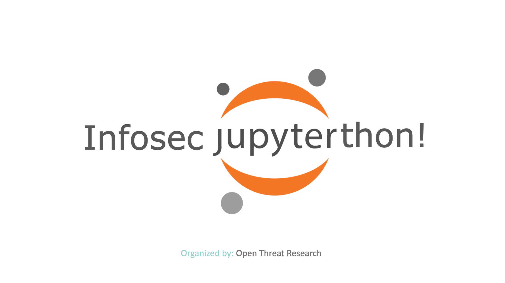

Infosec Jupyterthon
Agenda (Eastern Time)
Interactive Resources
Infosec Jupyterthon 2020!
Welcome Infosec Community!
ATT&CK - APT29 Evals Datasets
Untangling the Osquery❓ tables web🕸 using Jupyter Notebooks📓
Anomaly detection and visualization using Time Series Decomposition
Powered by
Jupyter Book
.ipynb
.pdf
Binder
ThebeLab
Edit this page
Infosec Jupyterthon 2020!
¶

Agenda (Eastern Time)
Welcome Infosec Community!